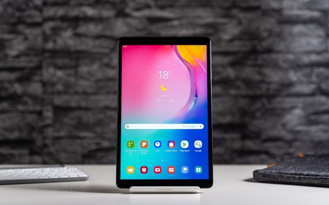

DigiNews
DigiNews
تمامی حقوق این سایت برای دیجی نیوز محفوظ است. نقل مطالب با ذکر منبع بلامانع است.
copy Right© 2022 DigiNews News Agancy, All rights reserved

بررسی سامسونگ گلکسی تب A مدل ۲۰۱۹؛ بهترین تبلت اقتصادی؟
گوشیهای اندرویدی با نمایشگرهای بزرگ بالای ۶ اینچ تا حد زیادی تبلتها را از میدان به در کردهاند، اما هنوز هم میتوان کاربردهایی برای تبلتها یافت. تماشای ویدیو، مطالعه کتاب و حتی اجرای برخی بازیها ...
گوشیهای اندرویدی با نمایشگرهای بزرگ بالای ۶ اینچ تا حد زیادی تبلتها را از میدان به در کردهاند، اما هنوز هم میتوان کاربردهایی برای تبلتها یافت. تماشای ویدیو، مطالعه کتاب و حتی اجرای برخی بازیها روی تبلت بهمراتب لذتبخشتر از گوشی موبایل است. البته در حال حاضر برای خرید یک تبلت اندرویدی با سختافزار مناسب باید حداقل ۴ میلیون تومان هزینه کنید. در این رده قیمتی با تبلتهای زیادی از لنوو روبرو هستیم اما سامسونگ هم محصول خوشقیمتی به نام گلکسی تب A (مدل ۲۰۱۹) دارد که با مشخصات قابل قبول، میتواند به یکی از گزینههای اصلی شما بدل شود.
طراحی و کیفیت ساخت
بدنه تبلت سامسونگ گلکسی تب A (مدل ۲۰۱۹) ترکیب سهگانه دارد؛ روی دستگاه بهطور کامل از شیشه پوشانده شده که البته لایه محافظ خاصی ندارد. فریم دستگاه از پلیکربنات سخت و مقاوم ساخته شده و پنل پشتی هم آلومینیومی است. تبلت کاملاً مستحکم و بادوام بهنظر میرسد و در عین حال وزن بالایی ندارد. در دست گرفتن این تبلت با ۳۴۷ گرم وزن خستهکننده نیست و میتوانید مدت زیادی با آن کار کنید.
اطراف نمایشگر را حاشیههای نسبتاً بزرگی احاطه کرده که در طرفین به ۱ سانتیمتر و در لبههای بالا و پایین به دو سانتیمتر میرسد. به همین دلیل نسبت نمایشگر به بدنه در گلکسی تب A (مدل ۲۰۱۹) فقط ۷۱ درصد است که طبق استانداردهای کنونی رقم مناسبی محسوب نمیشود. البته ما هم از یک تبلت ارزانقیمت انتظار زیادی نداریم.
نمایشگر
گلکسی تب A (مدل ۲۰۱۹) نمایشگر ۸ اینچی با رزولوشن ۸۰۰×۱۲۸۰ پیکسل و نسبت تصویر ۱۶:۱۰ دارد که با تراکم حدود ۱۸۹ پیکسل در هر اینچ، به اندازه کافی واضح و شفاف نیست ولی کارتان را راه میاندازد. یعنی اگر حداقل فاصله ۳۰ سانتیمتر بین چشم و تبلت را حفظ کنید، تراکم پیکسلی پایین صفحه آزاردهنده نخواهد بود.
سامسونگ از پنل TFT در این تبلت استفاده کرده که انتخاب مناسبی برای پایین آوردن هزینه نهایی محسوب میشود. برخلاف انتظار، کیفیت این نمایشگر TFT قابل قبول است و رنگها را با غلظت مناسبی نشان میدهد. زاویه دید هم نسبتاً خوب است ولی از نظر کنتراست و غنای رنگ، اختلاف قابل توجهی با نمایشگرهای HPS یا اولد دارد. البته این نمایشگرها فقط در تبلتهای گرانقیمت پیدا میشوند.
حداکثر روشنایی نمایشگر در حالت دستی و خودکار حدود ۴۰۰ نیت است که برای استفاده در محیطهای داخلی کفایت میکند اما در فضای خارجی و زیر تابش آفتاب بهسختی میتوانید محتوا را ببینید. مقداری اختلاف نوردهی در سطح پنل وجود دارد که بیشتر در محیطهای تاریک و هنگام تماشای ویدیو به چشم میآید و در حالت عادی احساساش نمیکنید.
صفحه گلکسی تب A (مدل ۲۰۱۹) از لمس همزمان ده انگشتی پشتیبانی میکند ولی از نظر سرعت و دقت تاچ کمی ضعیفتر از گوشیهای موبایل است. این موضوع هنگام اجرای بازیهایی که به لمس سریع صفحه نیاز دارند، بیشتر احساس میشود ولی بهمرور به آن عادت میکنید.
DigiNews
DigiNews
تمامی حقوق این سایت برای دیجی نیوز محفوظ است. نقل مطالب با ذکر منبع بلامانع است.
copy Right© 2022 DigiNews News Agancy, All rights reserved